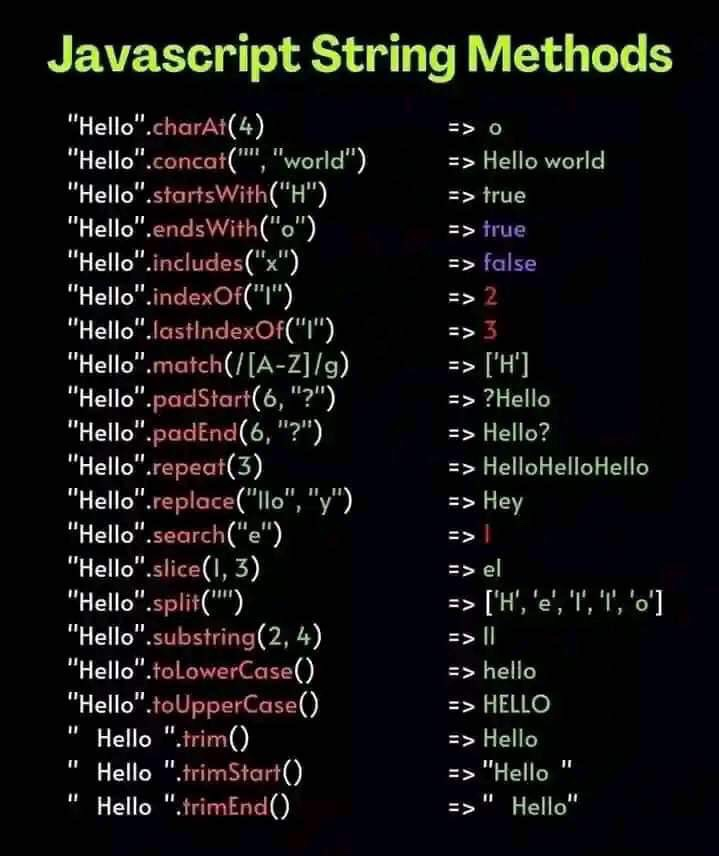

FRONT END DEVELOPMENT
JAVASCRIPT COURSE

WEB DEVELOPMENT.
Front end web development is the use of web languages to developed stunning,interactive and dynamic websites i.e, the use of HTML,CSS, and Javascript. Which are known as the FRONT END skills.
JAVASCRIPT INTRODUCTION:
JavaScript is a web programming language that is used to create interactive websites. It’s a very popular programming language that has being used to create millions of interactive websites/web apps etc.it like a home appliance in the house.
It is used for front end(client side) and also back end(server side).
you have known the meaning and uses of JavaScript.
JAVASCRIPT CORE:
Code editors.
syntaxes.
Variables.
Data types.
Expressions.
Operators.
Control flows.
Statements.
Functions.
JavaScript file/Inclusion.
Window Methods.
Let’s talk about the outlines respectively:
Code editors:
Code editors are used for writing and running codes. There are multiples of code editors that are used for coding but it depends on ur favorite and choice code editor that will be suitable for you.
| Web dev | Web dev | Web dev | Web dev | Web dev | Web dev |
|---|---|---|---|---|---|
| Visual Studio code | Notepad++ | Atom | Vim | Replit | Sublime |
The most common used code editor is the visual Studio code(VS code) because it works across platform including windows,Linux, and macOS and also has a lot of features and functions for easy web development process.
You can download it by searching (code.visualstudio.com) and install it in your PC.
If you don’t have PC,you can also learn/practice coding with your smartphone. Here are some smartphone code editors for HTML,CSS and JavaScript which are available on Google play store and Apple App Store:
| Android users | IPhone users |
|---|---|
| Spck editor,Acode,Anwriter or TrebEdit | JSitor |
Syntaxes:
JavaScript syntaxes includes;
Identifiers:
are the name of a variable,function,parameter or class.
Note:The first identifier character must be a small letter(a-z,or A-Z),an underscore(_),or dollar sign($). Other characters can be letters(a-z or A-Z),numbers(0-9),underscore(_) or dollar sign($).
It is good to use camel case for identifiers. I.e. the first letter in lowercase and each additional letter in uppercase.E.g;
myNumber,
isGood,
myAge
Comments:
are some tests written in codes to give an explanation about the code,and they are not visible to the user.it makes code easy to understand and increase readability of code.there are two types of JavaScript comments
Single line comment: Syntax; // this is a single line comment .Multiple line comment: Syntax; /* this is a multiple line comment */
Statements:
semicolon(;) is used to end a statement in JavaScript.it makes the code more readable and helps to avoid issues.E.g;
let a=30;
Expressions:
are pieces of codes that evaluates to a value. E.g;
3 + 2
The expression above returns 5. So,it’s a valid expression.
Single or double quotation marks:
is used in JavaScript values(strings,arrays,etc).
Variables:
Variables are containers use for storing values (data types). There are three keywords used for declaring variables in JavaScript.namely;
1. The var keyword,
2. The let keyword and
3. The const(constant) keyword
var
is used if the website should support old browsers.
let
is used if the website should support new browsers.
const
is used if the website should also support new browsers.
Note: const variable value can’t be changed.
Example of var,let and const.
var name="John Doe">
let job="Developer">
const stack="Full stack">
var is the keyword,name is the variable which store the value(John Doe)
let is the keyword,job is the variable which store the value(Developer)
const is the keyword,name is the variable which store the value(Full stack)
Data types:
are used to define how data is store in a variable.
There are six basic data types;
number:
is used to store number.it can be integer or floating point.E.g;
let grade=100; or let grade=1.20;
array
is used to group and store numbers/texts/Boolean using the square brackets.it count the first element as 0.
Array syntax:
let arrayName = [element1, element2, element3, ...];
Examples and explanations:
var job=[“web”,”app”] or var age=[5,10,25];
array is values access using variable_name and the arrayName[index]
Example and explanations;
let mountains = ['Everest', 'Fuji', 'Nanga Parbat'];
console.log(mountains[0]); // 'Everest'
console.log(mountains[1]); // 'Fuji'
console.log(mountains[2]); // 'Nanga Parbat'
The above array expressions is accessed using the square brackets Notation [] which output mountain[0] as Everest,mountain[1] as Fuji and mountain[2] as Nanga Parbat.
Array Methods
push()
It is used to add element(s) to the end of an array.
let seas = ['Black Sea', 'Caribbean Sea', 'North Sea', 'Baltic Sea'];
This above array will output 'Black Sea', 'Caribbean Sea', 'North Sea', 'Baltic Sea','Red Sea' because the push() has being added.
unshift()
It is used to add element(s) at the beginning of an array.
Example and explanations:
let seas = ['Black Sea', 'Caribbean Sea', 'North Sea', 'Baltic Sea'];
seas.unshift('Red Sea');
console.log(seas);
This above array will output 'Red Sea','Black Sea', 'Caribbean Sea', 'North Sea', 'Baltic Sea' because the unshift() method add element('Red Sea') at the beginning.
pop()
It is used to remove element(s) at the end of an array.
Example and explanations;
let seas = ['Black Sea', 'Caribbean Sea', 'North Sea', 'Baltic Sea'];
seas.pop();
console.log(seas);
This above array will output 'Black Sea', 'Caribbean Sea', 'North Sea' and remove the last element('Baltic Sea') because of the pop() method that has being added.
shift()
It is used to remove element(s) at the beginning of an array.
Example and explanations:
let seas = ['Black Sea', 'Caribbean Sea', 'North Sea', 'Baltic Sea'];
seas.shift();
console.log(seas);
This above array will output 'Caribbean Sea', 'North Sea', 'Baltic Sea' because of the shift() method that has being added.
indexOf()
It is used to check the index of an array.
Example and explanations:
let seas = ['Black Sea', 'Caribbean Sea', 'North Sea', 'Baltic Sea'];
index = seas.indexOf('North Sea');
console.log(index);
The above array will output 2 because of the indexOf() method that has being added.
In addition;
Use the new Array() or Array() method to create array.E.g;
let scores=new Array(1,2,3,4,5);
console.log(scores);
let numbers=Array(1,2,3,4,5);
console.log(numbers);
Both above expressions are valid but it’s recommend to use the normal Array square brackets.
Use the length property to check each Array size. E.g;
let mountains = ['Everest', 'Fuji', 'Nanga Parbat'];
console.log(mountains.length); // 3
This above expression will output “3” because of the length property which get the Array size.
Use the Array.isArray() method to check if Array expression is actually JavaScript Array. E.g;
let scores=[1,2,3,4,5]; console.log(Array.isArray(scores))
This above expression will output “true” because the expression is valid.
Use the typeof() method to check JavaScript data type(s) name. E.g;
let age=50;
console.log(typeof(age))
This above expression will output “number”
string:
is used to store text. it slightly similar to array data type.E.g; const name=“JavaScript”;
String methods:
replace()
it is used to replace string text.
Example and explanation;
let name="Elon Musk";
output=name.replace("Elon Musk","Bill Gate");
console.log(output)
This above expression will output “Bill Gate” because the replace() method has being added.
toLowerCase()
It is used to change uppercase string text to lowercase.
Example and explanation;
let name="ELON MUSK";
output=name.toLowerCase();
console.log(output)
This above expression will output “elon musk” because the toLowerCase() method has being added.
toUpperCase()
It is used to change lowercase string text to uppercase.
Example and explanation;
let name="elon musk";
output=name.toUpperCase();
console.log(output);
This above expression will output “ELON MUSK” because the toUpperCase() method has being added.
indexOf()
It is used to check the index of an array.
Example and explanations:
let seas = ['Black Sea', 'Caribbean Sea', 'North Sea', 'Baltic Sea'];
index = seas.indexOf('North Sea');
console.log(index);
The above array will output 2 because of the indexOf() method that has being added.
String methods illustration; 
boolean
It is used to store true or false.E.g;
var good=true; or var good=false;
undefined
It is used when a variable has not been assigned with a value.E.g;
let gender;
null
It is used to represent nothing or no value.E.g;
const name=null;
Operators
are used to perform operations in JavaScript.
There are four operators;
1. Assignment(=) operators
are used to assign a value to a variable.This is the sign(=).E.g;
const pen=2;
2. Arithmetic operators
are used to perform arithmetic operations such as addition(+),subtraction(-),multiplication(*) and division(/).E.g;
let book=1 + 5;
3. Comparison operatorsare used to compare two values.
Signs,examples and explanations of comparison operator below;
Signs:
equal to(==):
true if the operands are equal.E.g;
6==6;//true
unequal to(!=):
true if the operands are not equal.E.g;
6!=7;//true
strict equal to(===):
true if the operands are equal and of the same type.E.g;
6===6;//true
strict unequal(!==):
true if the operands are equal but of different type or not equal at all.
6!==“6”;
greater than(>).
Examples with explanations:
var number=10>5;
This expression above will display true because the left operand(10) is greater than the right operand (5).
Note: The left operand must be greater than the right operand.else it will output false.
less than(<).
Example with explanations:
let time=3<10;
This expression above will output true because the left operand(3) is less than right operand(10).
Note: The first operand must be less than the right operand else it will output false.
greater than or equal to(>=).
Example and explanations:
var number=10>=5;
This expression above output will be true because the left operand(10) is greater than or also equal to the left operand(5)
Note: The right operand must be greater than or equal to the left operand.else the output will be false.
less than or equal to(<=).
Example and explanations below;
let time=3<=10;
This expression above will output true because the left operand(3) is less than or equal to the right operand(10).
Note: The right operand must be less than or equal to the left operand.else the output will be false.
4.Logical operators
are used to combine logical expressions.
Examples and explanations of logical operator below;
NOT(!).
The ! operator returns true for a false expression and false for a true expressions.
Examples with explanations;
let age=!10;
This expression above will output false because the NOT(!) sign is added. Though,the expression is true without the NOT(!) sign but the NOT(!) sign change it to false.
let age=!undefined;
This expression above will output true because the NOT(!) sign is added. Though,the expression is false without the NOT(!) but the NOT(!) sign change it to true.
Note: If the value is true,the output will be false.if the value is false,the output will be true.
console.log(!undefined); // true
console.log(!null); // true
console.log(!20); //false
console.log(!0); //true
console.log(!NaN); //true
console.log(!{}); // false
console.log(!''); //true
console.log(!'OK'); //false
console.log(!false); //true
console.log(!true); //false
OR(||).
The || operator returns true if one or both expressions are true,otherwise false.
Examples with explanations;
Examples with explanations:
let eligible = false || true;
This expression above will output true because the value(false) is negative.
let verify=100||50; This expression above will output 100 because 100 is greater than 50 and also positive.
AND(&&).
The && operator returns true if both the expressions are the same,otherwise false.
Examples with explanations:
let eligible=false && false; console.log(eligible);
This expression above will output false because both expressions are false.
Expressions:
Expressions are pieces of codes that evaluate to a value. E.g;
3 + 4
The expression above will evaluate to 7. So,it’s a valid expression.
Control flows are used to determine how program flow through its code. There are two types of control flow;
1.Conditional control flow:
it is also known as conditional statement.they are used to execute code base on decision.
They are three main conditional statements which are “if”,else and “else if” statement.
The “if” statement is used to execute code if a certain conditions is true.
The “else” statement is used to execute code if the “if” condition is fault.
The “else if” statement is used to add additional conditions to the “if” statement.
it accept true/false condition. It’s called nested statements and also carry multiple else if statements base on your decision.
Syntax of if statement;
if(condition){
//the function
}
Syntax of else statement;
else{
//the function
}
Syntax of else if statement; else if(another condition){ //the function }
Syntax of if,else,else if statements.
if(condition){
//the function
}else if(another condition){
//the function
}else{
//the function
}
Examples using the “if and else statements:
let age=30;
if(age>18){
alert("You are an adult")
}else{
alert("You are a teenager")
}
This expressions above will output “You are an adult” because the age is 30 and age(30) is greater than 18 which is true. The else will output “You are a teenager” if the age(30) is less than 18 which is false.
Examples using the if,else and else if statements:
let age=20; if(age>18){ alert("You are an adult"); }else if(age<80){ alert("You are older"); }else{ alert("You are a teenager") };
This expressions above will output “You are an adult” because the age is 30 and age(30) is greater than 18 which is true.
The else if will output “You are older” because the age(20) is less than 80 which is another condition for the if statement.
The else will output “You are a teenager” if the age(30) is less than 18 which is false.
The correct output is “You are an adult”.
2.Iterative control flow:
it is used to repeat block of code multiple times.There are two iterative control flow. The for and while. It’s also called loop.
Syntax and explanations of for loop:
for(initialisation;condition;expression/increment){ //the function };
Example of for loop:
for(let i=0;i<=10;i++){ console.log(i) }
The above expression will output 0 to 10 and stop. The let i=0; is the initialisation,i<=10; is the condition while i++ is the increment which update the initialisation from 0 to 10.
Syntax and explanations of while loop.
while(condition){ //the function };
Example of while loop:
let i=0; while(i<=10){ i++ console.log(i) }
This above expression will output 1 to 11.
The let i=0 is the declaration,i<=10 is the condition and i++ is the increment which update it from 1 to 11.
break,continue and switch statement:
Statements are codes that are used to perform various tasks.
breakstatement:
It is used to terminate the loops immediately when it is encountered.
Syntax of break statement; break [label];
Example and explanations:
for (let i = 1; i <= 5; i++) { if (i == 3) { break; } console.log(i); }
This expression above will output 1 to 2 because of the conditional and break statements.
The conditional statement (i==3) regenerate the for loop condition (i<=5) and add a break statement to it,which break the condition and output 1 to 2.
continue statement:
it is used to continue the loops.
continue [label];
Examples and explanations;
for (let i = 1; i <= 5; i++) { if (i == 3) { continue; } console.log(i); }
This expression above will output 1 to 5 because the continue statement is added to it to continue the loop. Note:if it’s break statement,it will output 1 to 2.
switch statement:
Syntax of switch statement:
switch(variable/expression) { case value1: //the function break; case value2: //the function break; case valueN: // the function break; default: //the function }
Example of switch statement:
let a = 2;
switch (a) {
case 1:
a = "one";
break;
case 2:
a = "two";
break;
default:
a = "not found";
break;
}
console.log(`The value is ${a}`);
This expression above will output “The value is two” because the expression let a=2;is evaluated with case 1 (a=“one”) which results to false,then the switch statement goes to the second case 2 (a=“two”) which matches the expression (let a=2;) and output the case 2(“The value is two”).
The break statement terminates the block and control flow of the program jumps to outside of the switch block. Don’t forget to add string interpolation(‘’) when dealing with switch statement.
Functions
Functions are used to perform tasks with the use of;
This is the keyword function. E.g;
function Function_name: it’s used to specify the name of the function using the identifier. E.g;
function myFunction();
Parameter:
it is used as identifier for argument. E.g;
function myFunction(a,b)
This above function holds function_name(myFunction) and two parameters(a,b).
Argument:
it is used to write the value of the parameter identification. E.g;
function myFunction(a,b){
return a + b;
};
console.log(myFunction(4,5))
This above function will output 9 because the parameters(a,b) has return a+b and then the arguments are used to add values(4,5) to the parameters.
Amazing,you just completed HTML, CSS and Javascript course.